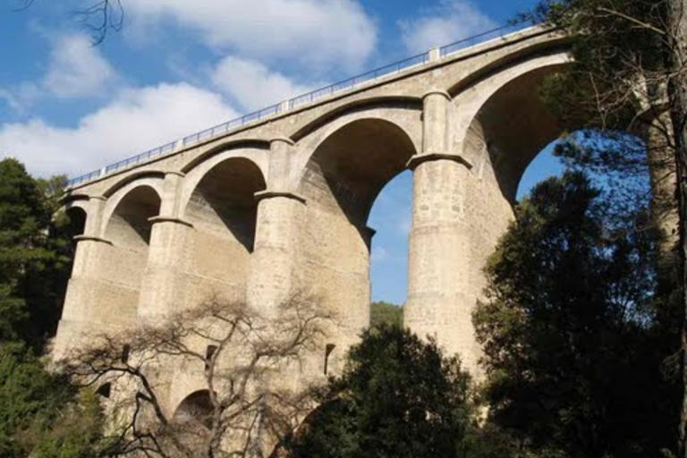

Visita · Vallirana
Durant la segona meitat del segle XVlll , regnant a Espanya el rei Carles lll, es va dur a terme la construcció de la nova carretera entre Vilafranca i Barcelona, l'actual N-340, una obra…